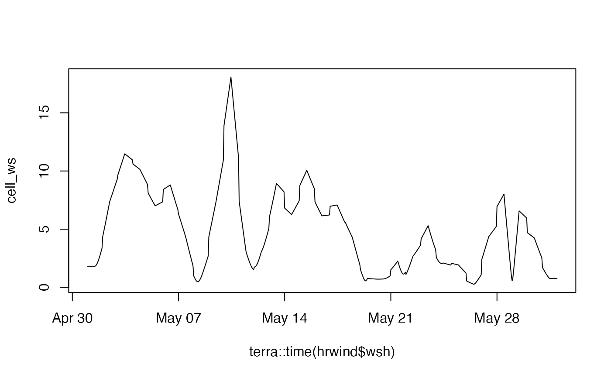
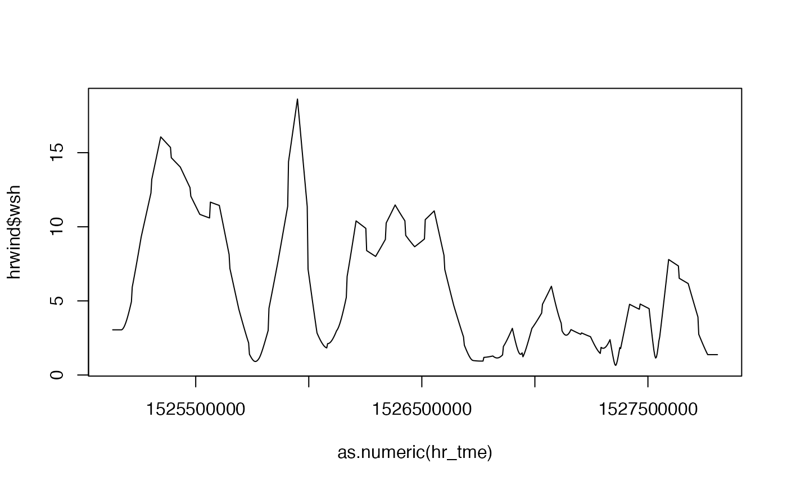

Derives arrays of hourly wind speed and direction from arrays of daily data.
Arguments
- ws
an array of daily mean wind speed values (m/s)
- wd
an array of daily mean wind direction values (deg from N)
- tme
POSIXlt object of dates corresponding to ws and wd
- adjust
optional logical which if TRUE ensures that, after interpolation, returned hourly values, when averaged to daily, match the input
Value
a list of two arrays: (1) hourly wind speed (m/s) (2) hourly wind direction (degrees from north)
Details
For interpolation, u and v wind vectors are derived form wind speed and direction and these are interpolated to hourly, with backward calculations then performed to derive wind speed and direction. ~~ * Need to spline interpolate u and v wind vectors. We could simulate ~~ inter-hourly variability. Follows a Weiball distribution so quite easy I suspect.
Examples
# ========================================================================= #
# ~~~~~~~~~~~~~~~~~~~~ input provided as SpatRaster ======================= #
# ========================================================================= #
climdaily<-read_climdata(ukcpinput)
ws<-climdaily$windspeed
wd<-climdaily$winddir
hrwind<-wind_dailytohourly(ws, wd, tme=NA, adjust = TRUE)
# Plot results for one cell
cell_ws<-t(terra::extract(hrwind$wsh,matrix(c(175000,40000),ncol=2)))
matplot(terra::time(hrwind$wsh),cell_ws, type = "l", lty = 1)

# ========================================================================= #
# ~~~~~~~~~~~~~~~~~~~~ input provided as vector =========================== #
# ========================================================================= #
ws<-unlist(terra::global(climdaily$windspeed,mean))
wd<-unlist(terra::global(climdaily$winddir,mean))
tme<-as.POSIXlt(terra::time(climdaily$windspeed))
hrwind<-wind_dailytohourly(ws, wd, tme=tme, adjust = TRUE)
hr_tme<-as.POSIXlt(unlist(lapply(tme,FUN=function(x) x+(60*60*c(0:23)) )))
# Plot results to compare
matplot(x=as.numeric(hr_tme),y=hrwind$wsh, type = "l", lty = 1)
